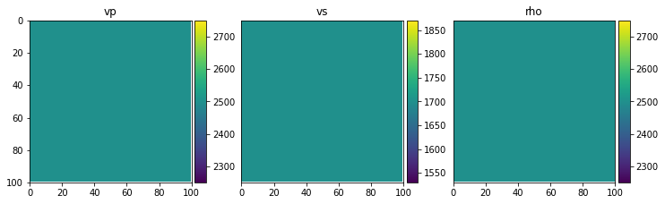
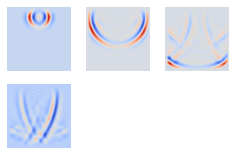
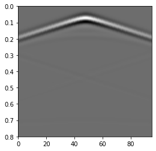

[1]:
import sys
sys.path.append('../../src/')
import PyFWI.wave_propagation as wave
import PyFWI.acquisition as acq
import matplotlib.pyplot as plt
import PyFWI.seiplot as splt
import numpy as np
[2]:
model_shape = [100, 100]
model = {
'vp': 2500 * np.ones(model_shape, np.float32),
'vs': 1700 * np.ones(model_shape, np.float32),
'rho': 2500 * np.ones(model_shape, np.float32),
}
splt.earth_model(model);

[3]:
inpa = {
'ns': 1, # Number of sources
'seisout': 0, # Type of output
'sdo': 8, # Order of FD
'fdom': 15, # Central frequency of source
'dh': np.float32(7), # Spatial sampling rate
'dt': 0.0006, # Temporal sampling rate
'acq_type': 1, # Type of acquisition (0: crosswell, 1: surface, 2: both)
't': 0.8, # Length of operation
'npml': 20, # Number of PML
'pmlR': 1e-5, # Coefficient for PML (No need to change)
'pml_dir': 2, # type of boundary layer
'device': 1,
}
inpa['rec_dis'] = 1 * inpa['dh'] # Define the receivers' distance
offsetx = offsetx = inpa['dh'] * model_shape[1]
depth = depth = inpa['dh'] * model_shape[0]
src_loc, rec_loc, n_surface_rec, n_well_rec = acq.AcqParameters(inpa['ns'], inpa['rec_dis'], offsetx, depth, inpa['dh'], inpa['sdo'],
inpa['acq_type'])
src_loc[:, 1] -= 5 * inpa['dh']
# Create the source
src = acq.Source(src_loc, inpa['dh'], inpa['dt'])
src.Ricker(inpa['fdom'])
# Create the wave object
W = wave.wave_propagator(inpa, src, rec_loc, model_shape, n_well_rec, 20, inpa['seisout'])
# Call the forward modelling
db_obs = W.forward_modeling(model, False)
[4]:
fig = plt.figure(figsize=(4, 4))
count = 1
for i in [40, 80, 130, 180]:
ax = fig.add_subplot(3, 3, count)
ax.imshow(W.W['taux'][:, :, 0, i], cmap='coolwarm')
ax.axis('off')
count += 1

[5]:
fig = plt.figure(figsize=(4, 4))
ax = fig.add_subplot(1, 1, 1)
ax = splt.seismic_section(ax, db_obs['taux'], t_axis=np.linspace(0, inpa['t'], W.nt));

[ ]: